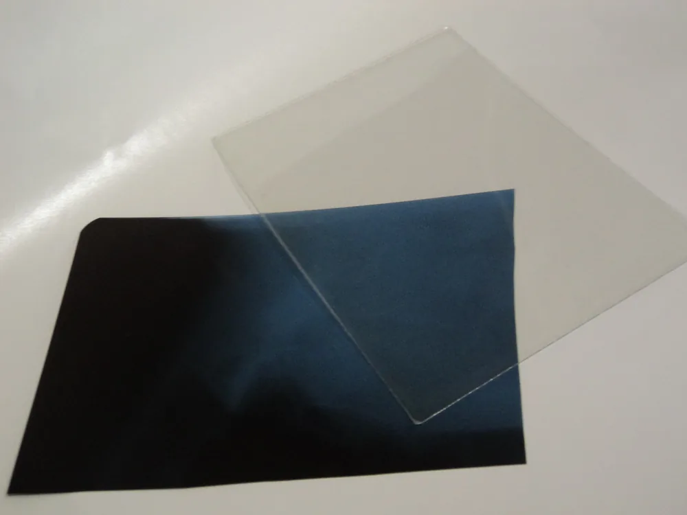
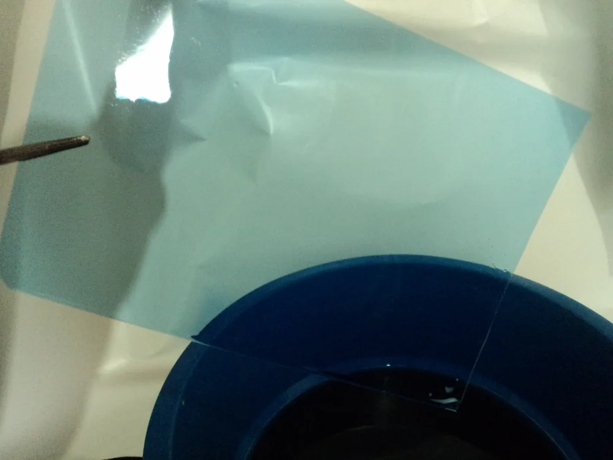
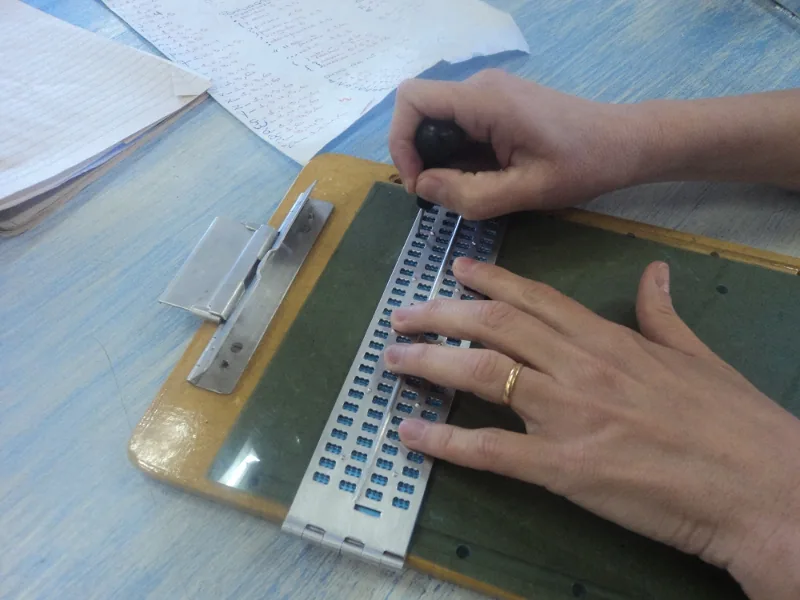
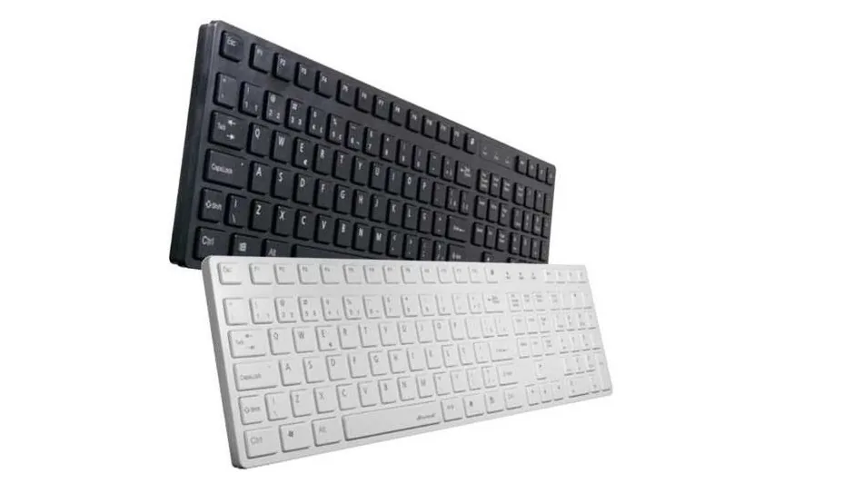
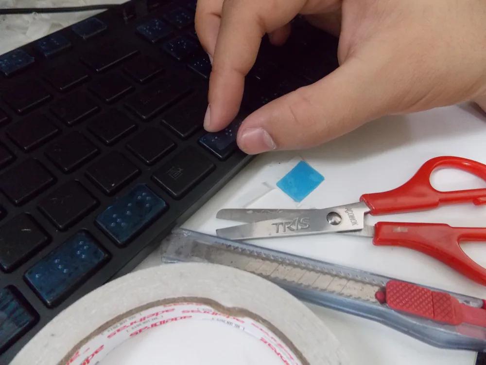

Adaptação de um teclado para o Braille
Observação: se você possui deficiência visual, recomendamos que peça ajuda de alguém para a realização das etapas de adaptação.
Etapa 1
Em primeiro lugar, escolha um material para escrever em Braille. Recomendamos um material resistente, para que não desgaste com o tempo. Chapas de raio X são uma ótima opção, pois você não terá gastos e ainda fará o reaproveitamento do material.

Etapa 2
Caso tenha optado por um material diferente do recomendado, pule para a etapa 3. Se você optou por usar chapas de raio X, limpe-as com água sanitária: basta deixá-las submersas por alguns minutos e depois enxaguar. Não esqueça de usar luvas para prevenir os resíduos tóxicos.

Etapa 3
Agora que você já possui um material adequado, escreva todas as letras do alfabeto em Braille. Para esta etapa, utilize um reglete, que é uma ferramenta própria para a escrita Braille. Caso não possua a ferramenta, solicite-a em uma escola específica para deficientes visuais.

Etapa 4
Escolha um teclado comum para fazer a adaptação ao Braille. Prefira teclados que tenham as teclas com as superfícies planas. Após ter escrito todas as letras e símbolos no material, recorte cada um no tamanho correspondente às teclas do teclado que será adaptado.

Etapa 5
Por último, cole cada símbolo recortado em cima de sua tecla correspondente. Para a colagem, recomendamos fita dupla-face.
